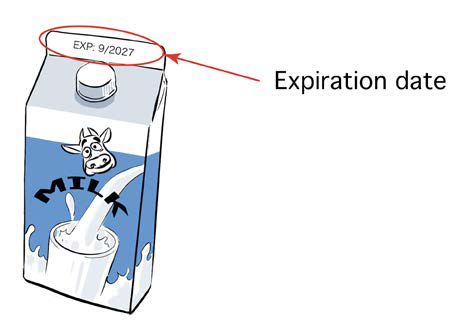

of the key things to consider are expiration date, instruction for using the product, ingredients and storage methods.
Expiration date
An expiration date is the last day a product is safe for use. It tells when a product is no longer safe to use. Products should not be used after this date, as they may be harmful to health. The expiration date is usually written on the product in different ways, like “Expiry date” or as short forms like “ED,” “EXP” or “E.” Figure 17 shows an example of the expiration date of a product.

Instruction on how to use the product
It is very important to read and understand the instructions before using any product. This helps use it in the right way and stay healthy. For example, products like human medicine should be used in the right amount to minimise risks to human health and the environment. Figure 18 shows instructions on how to use a product.